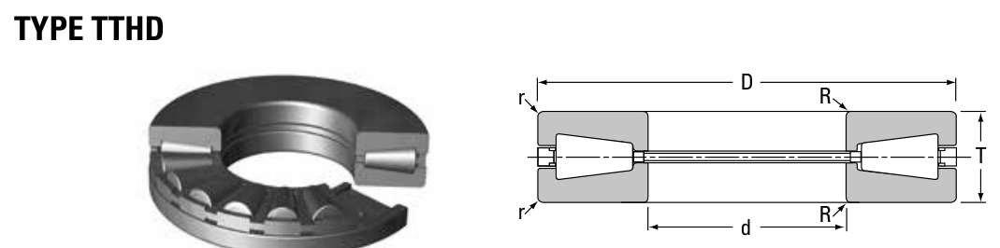

T811 is a Timken thrust bearing, bore 203.2 mm, O.D. 419.1 mm, height 92.08 mm, weight 65.48 kg. Dimensions, drawing, interchanges and price.

Scanned from the manufacturer catalogue page listing this part number. All part numbers printed on that table share the same drawing.
Blue = inner / outer ring, yellow = rolling element. Drawn to scale from this part's own dimensions for selection reference only - not a manufacturing or assembly drawing.
| Symbol | Dimension | mm | inch |
|---|---|---|---|
| d | Bore diameter | 203.2 | 8 |
| D | Outside diameter | 419.1 | 16.5 |
| T | Overall assembly width | 92.075 | 3.625 |
Thrust bearing ratings are axial values Ca / Coa; T is the overall height. Weights are given in kg. Load ratings are shown in both the original catalogue units and the converted value (1 N = 0.2248 lbf). Data is provided for selection reference only - confirm against the latest official catalogue before ordering.
| Bore d (mm) | 203.200 |
|---|---|
| Outside dia. D (mm) | 419.100 |
| Overall width T (mm) | 92.075 |
| Basic static load rating C0r (N) | 11400000 |
|---|---|
| Thrust rating Ca90 (N) | 869000 |
| Static rating C0 (N) | 11400000 |
| Weight (kg) | 65.48 |
|---|
| Brand | Timken |
|---|---|
| Source catalogue | Timken Tapered Roller Bearing Catalog (2016) |
| Catalogue page | p.739 (dimensions) |
| Series type | TTHD |
ISO dynamic rating C1, Timken C90 / Ca90, static rating C0, geometry factors and assembly weight.
Send us the quantity you need and we will come back with price and lead time, normally within 24 hours. Equivalent parts from other brands can be quoted at the same time.